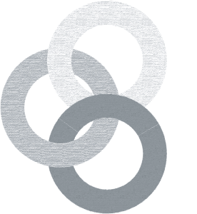

I have a CERN account
SWAN
Requires CERN credentials
CERNBox as home directory
Complete scientific software suite
Integrated with CERN services
Please
read more about it here
I don't have a CERN account
Binder

Anonymous
Temporary storage
Download capability
Some software packages
Please
check status here